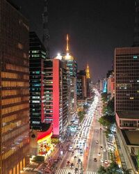
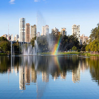

A avenida paulista

Um dos principais centros financeiros da cidade, a avenida Paulista também possui diversas opções de entretenimento.
Endereço do Museu de Arte de São Paulo,MASP, do Teatro Gazeta e muitos outros,
a região é de fácil acesso graças as diversas linhas de ônibus que cruzam a avenida e a linha de metrô que passa por baixo dela.
A Avenida Paulista sempre é assunto.
O que será que estão falando a respeito no twitter?
Os bares Da Vila Madalena

Depois de um dia de trabalho, nada melhor do que um bom chopp, um petisco e uma conversa em uma mesa de bar.
Opções de sobra na região das ruas Aspicuelta, Fradique Coutinho e Wisard.
Veja quais os melhores bares e restaurantes da região no
Guia da VEJA São Paulo
O Parque Ibirapuera

Um dos cartões postais da cidade, o parque dispõe de mais de 1,5 km de área verde, lagos artificiais e pistas de cooper e ciclismo.
E se isso não fosse o suficiente, o parque costuma ser palco de diversos eventos culturais ao longo do ano.
Veja no mapa
como chegar ao parque.